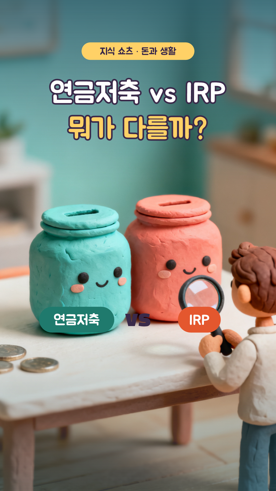
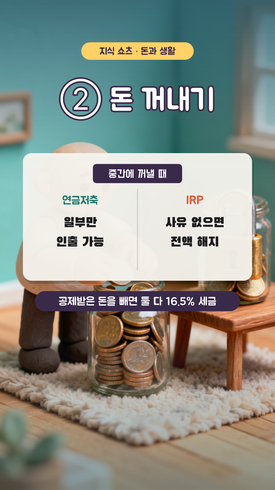

연금저축 vs IRP, 뭐가 다를까? — 8컷 콘티
1분 (+ 썸네일 1초) · 1080×1920 · 30fps · 자막 카드 y=1480 · 내레이션 ko-KR-Chirp3-HD-Charon · 지식 쇼츠 22편 · 3D 클레이 AI(Seedream 4.0) + 인포그래픽

S01
0:00–0:04 · 4.8초
모션
ai 카메라 이동 0.0s, title 팝 0.0s, names 팝 0.8s
내레이션
연금저축과 IRP, 둘 다 세금을 돌려주는데 / 뭐가 다를까요?
S02
0:04–0:10 · 5.6000000000000005초
모션
ai 카메라 이동 0.0s, title 팝 0.0s, total 팝 0.3s, solo 도장 3.0s
내레이션
두 통장을 합치면 900만 원까지 세액공제돼요 / 연금저축 혼자서는 600만 원까지만 되고요
S03
0:10–0:15 · 5.199999999999999초
모션
ai 카메라 이동 0.0s, title 팝 0.0s, vs 팝 0.4s
내레이션
첫째, 가입 자격이 달라요 / 연금저축은 누구나 되지만, IRP는 소득이 있어야 해요

S04
0:15–0:23 · 8.000000000000002초
모션
ai 카메라 이동 0.0s, title 팝 0.0s, vs 와이프 → 0.4s, tax 페이드 5.4s
내레이션
둘째, 돈 꺼내기, 연금저축은 필요한 만큼 일부만 뺄 수 있어요 / IRP는 집 구입 같은 사유가 없으면 통째로 해지해야 해요
S05
0:23–0:30 · 6.399999999999999초
모션
ai 카메라 이동 0.0s, title 팝 0.0s, vs 와이프 → 0.4s
내레이션
셋째, IRP는 주식 같은 위험자산을 70%까지만 담을 수 있어요 / 이런 제한이 없는 건 연금저축펀드예요
S06
0:30–0:33 · 3.6000000000000014초
모션
ai 카메라 이동 0.0s, title 팝 0.0s, ret 팝 0.3s
내레이션
대신 IRP는 퇴직금을 받아 연금으로 굴리는 통장도 돼요
S07
0:33–0:44 · 10.399999999999999초
모션
ai 카메라 이동 0.0s, badge 팝 0.0s, question 팝 0.3s, choices 팝 0.8s, answer 도장 3.8s, why 페이드 8.0s
내레이션
퀴즈! 연금저축에만 900만 원을 넣으면 얼마까지 공제될까? / 정답은, 600만 원까지예요! / 그래서 남은 300만 원은 IRP로 채우는 경우가 많아요
S08
0:44–1:00 · 16.0초
모션
ai 카메라 이동 0.0s, look 팝 0.2s, button 팝 4.6s, finger 탭 5.2s
내레이션
중간에 쓸 수도 있다면 연금저축부터, 더 채우고 싶다면 IRP를 더하세요 / 더 많은 돈 이야기가 궁금하다면 구독해 주세요